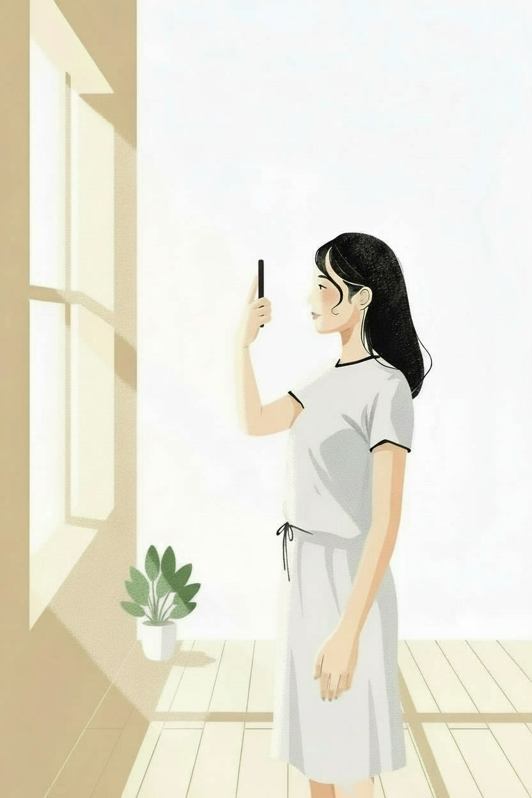
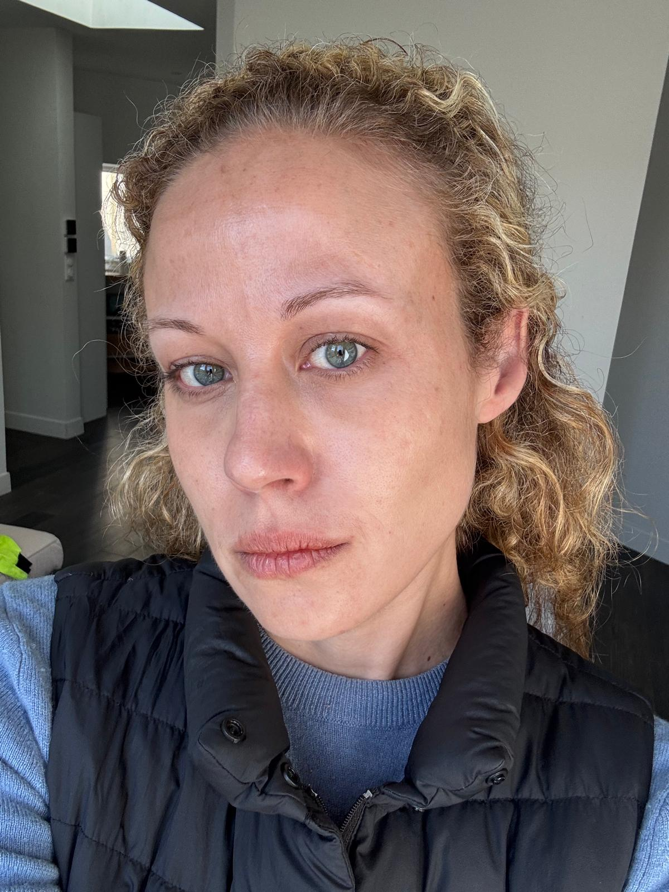
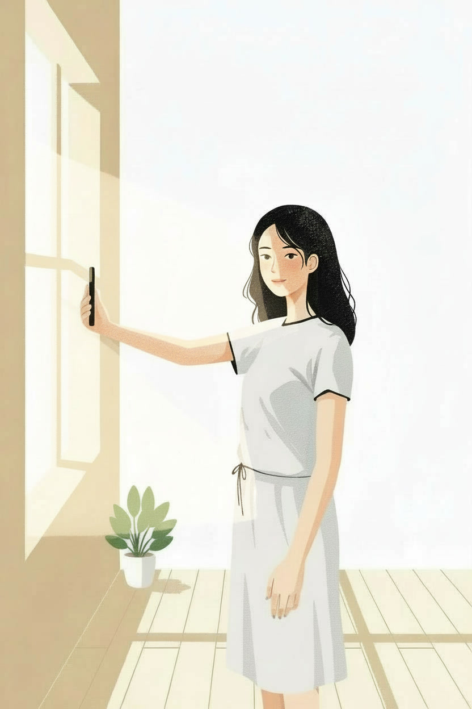
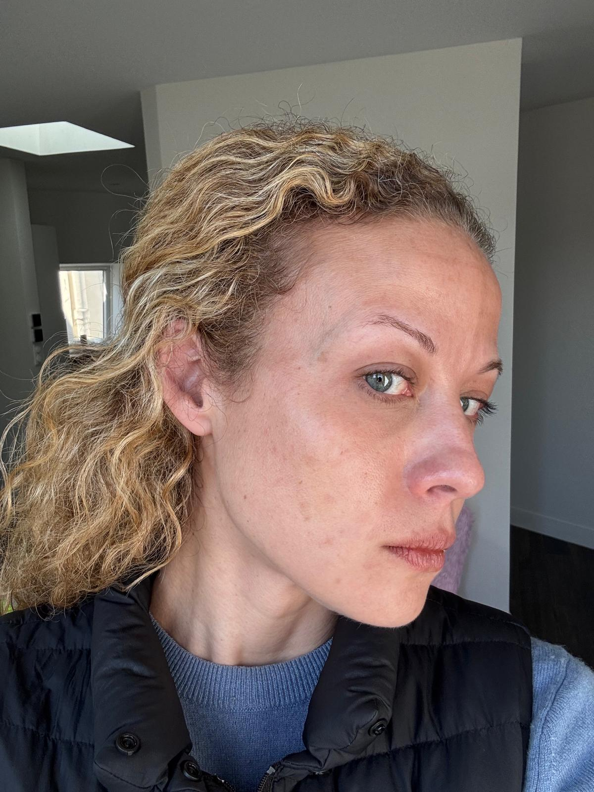
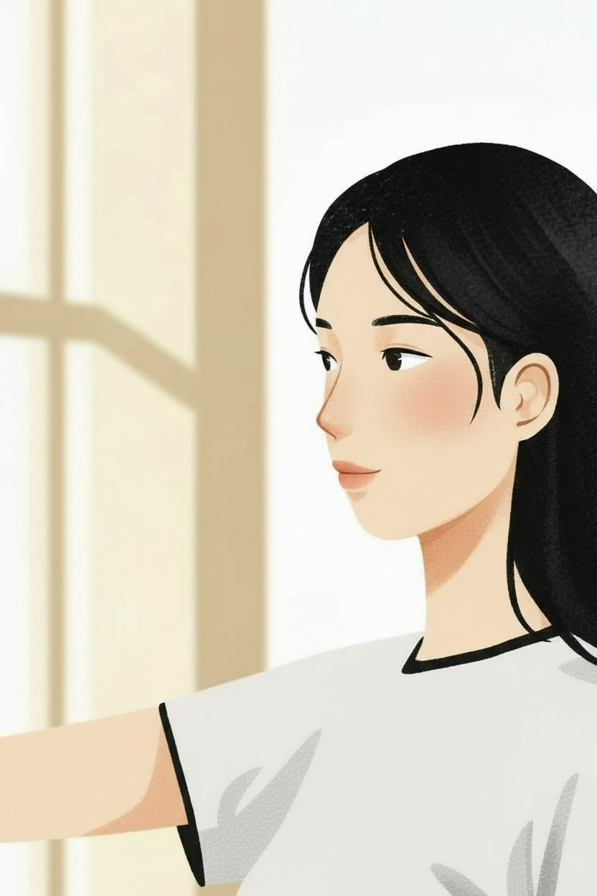
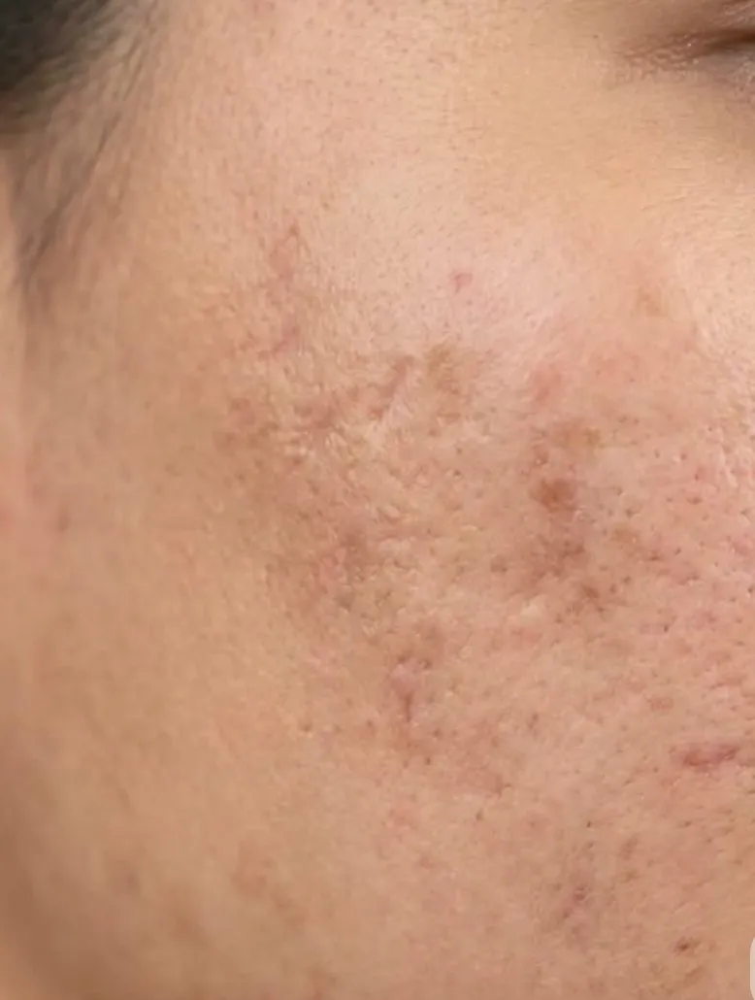

Guide photo
Comment prendre une bonne photo de votre peau
Quelques minutes pour une photo nette, exploitable par votre dermatologue et qui permet un diagnostic précis.
Préparation
Avant de commencer
- Utilisez la caméra arrière de votre téléphone si possible : si un proche peut vous photographier, c'est le mieux — la caméra arrière est de meilleure qualité que la caméra selfie.
- Si vous êtes seul(e), la caméra selfie fonctionne très bien aussi.
- Désactivez le flash — il écrase les détails et fausse les couleurs.
- Pas de filtre, pas de retouche. On a besoin de voir votre peau telle qu'elle est.
Lumière
La lumière, c'est la clef
- Placez-vous près d'une fenêtre, en lumière du jour naturelle.
- Évitez le soleil direct — une lumière douce et diffuse est parfaite.
- Ne vous mettez jamais dos à la fenêtre — votre visage serait dans l'ombre.
- Le matin ou en milieu de journée, c'est idéal.
Cadrage
Les 3 types de photos
Prenez les 3 photos au même endroit, près d'une fenêtre, en lumière naturelle et sans flash. L'orientation par rapport à la fenêtre change selon la photo — voir chaque étape ci-dessous.
Étape 1
Photo de face


Regardez droit dans l'objectif, lumière de face.
Étape 2
Photo de profil


Tournez la tête à 90°, joue bien exposée vers la fenêtre.
Étape 3
Photo zoomée


Rapprochez l'appareil de la zone concernée, lumière uniforme.
Vérification
Vérifiez avant d'envoyer
- La photo est nette — pas floue, pas bougée.
- On voit clairement la zone de peau concernée.
- Pas de filtre, pas d'effet beauté activé sur l'appareil photo.
- En cas de doute, prenez-en plusieurs et gardez la meilleure.